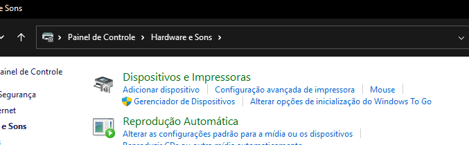
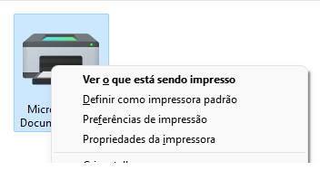
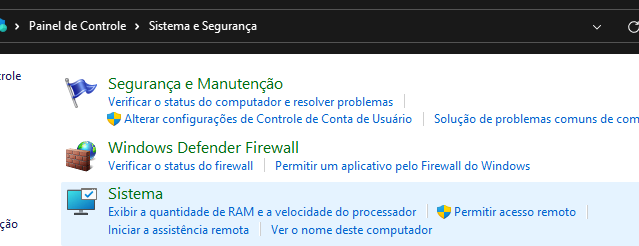
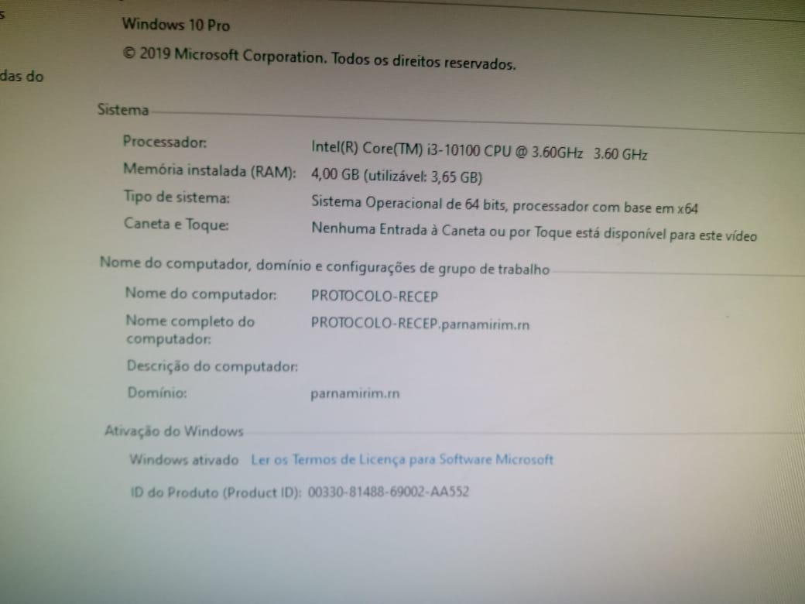
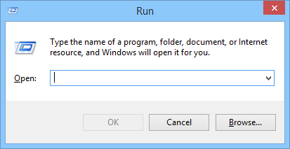
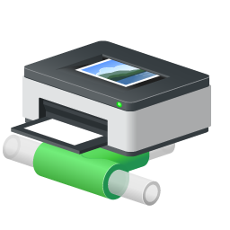
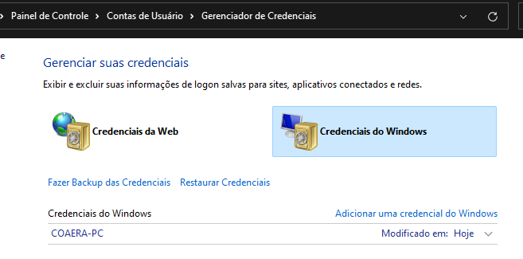
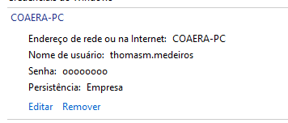
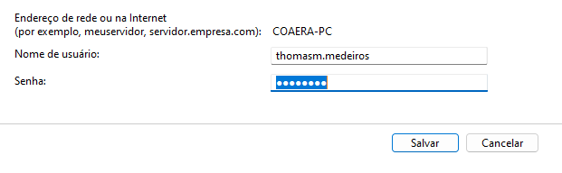

Impressoras
Compartilhar impressora na rede
No computador que está com o cabo da impressora, abra o painel de controle e vá em Hardware e Sons -> Dispositivos e Impressoras. Encontre a impressora

Clique no botão direito em cima da impressora que deseja compartilhar e selecione propriedades da impressora.

Vá na aba "Compartilhamento" e ative o compartilhamento.
Conectar PC na impressora em rede
No computador que está com o cabo da impressora, abra o painel de controle e clique em "Sistema e Segurança", o nome verde.
Agora clique em Sistema.

Decore ou anote o nome do PC. Nesse caso "PROTOCOLO-RECEP"

No PC que quer conectar com a impressora, aperte a tecla Windows+R, abrirá esta tela:

Digite \\nome-do-pc , nesse caso, \\PROTOCOLO-RECEP
Clique neste ícone para conectar na impressora:

De volta no painel de controle, vá em Hardware e Sons -> Dispositivos e Impressoras. Encontre a impressora
Clique com botão direito na impressora que você conectou e selecione "Definir como Impressora Padrão".
Credenciais
- Mudança de senha, popup da credencial não aceita nova senha.

- Solução

Aqui aparece o login que foi usado para conectar na impressora. Clica em no COAERA-PC(no seu estará diferente!)

Clica em editar:

Edite sua senha e salve. Fim.
